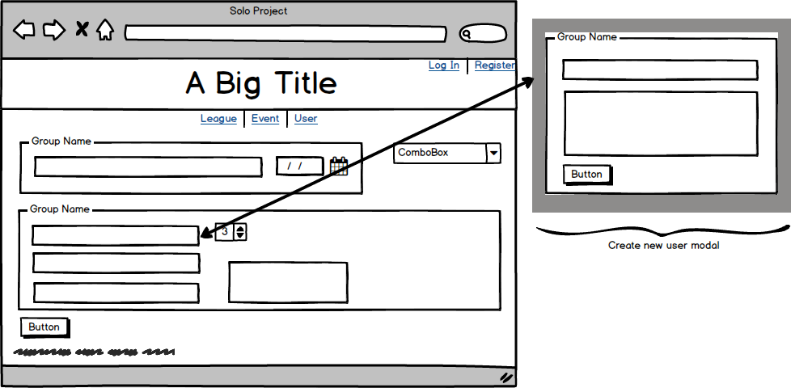
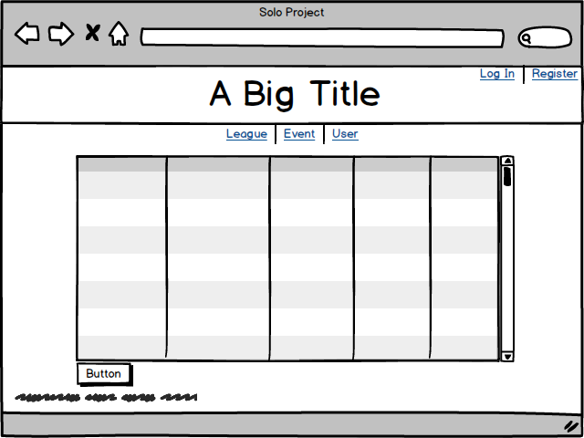

Sheepshead League Administrator
An app to manage your sheepshead leagues
Project #0001
Februray 2, 2016
Version 2.1
Document Objective
The purpose of this document is to provide detailed documentation that clearly defines the work that Joseph Anderson will perform, your requirements and specifications under which that work will be performed, and the deliverables you will receive within the scope of this project. By accepting this document you acknowledge your understanding of and agreement to this scope of work. Any requirement that falls outside the specifications of this document will be considered "Out of Scope" and may require significant changes to the budget or timeline established for this project.
This document supersedes the estimate and any other documentation provided regarding the work to be performed by Joseph Anderson.
Scope of Work Details
General Description
This project is designed to exhibit technical and project management skills learned in the course of study at Prime Digital Academy. Specifcally, Sheepshead League Administrator is a web application desinged to help users track participation in sheepshead games (a card game) as well as information about those games.
Layout
Homepage
-
Header with Title & Log in / Register links
-
Navigation to other parts of the site
-
Display of current Leagues running
-
Display of recent games
-
Display of leaders in certain statistical categories
-
A News Box for recent Updates
-
Footer with copyright and name
League Landing Page
-
Header with Title & Log in / Register links
-
Link to League Creation
-
List of current Leagues in the database and their events
-
Footer with copyright and name
League Detail Page
-
Header with Title & Log in / Register links
-
Ability to select League to filter data of the following format:
-
League standings
-
List of members
-
List of recent events associated with league
-
Footer with copyright and name
League Creation Page
-
Header with Title & Log in / Register links
-
League Name
-
Set Commissioner
-
Footer with copyright and name
Event Landing Page
-
Header with Title & Log in / Register links
-
Link to Event Creation page
-
List of current Events in the database and their rosters
-
Footer with copyright and name
Event Detail Page
-
Header with Title & Log in / Register links
-
Ability to select Event to filter data of the following format:
-
Players present and their position at the table both physically and how they finished (Hands Won, Hands Lost)
-
A hand-by-hand recap of scoring in "table" form
-
Footer with copyright and name
Event Creation Page
-
Header with Title & Log in / Register links
-
Event Name
-
Event Date
-
Event Location
-
Number of Players
-
Select menu for who to add, ability to add new User or a Guest
-
A submit button that takes them to the page to enter the scoresheet
-
Footer with copyright and name

Scoresheet Entry Page
-
Header with Title & Log in / Register links
-
A table with appropriate headers carried over from Event creation page
-
A table that will allow users to enter the score results from each hand,
-
Footer with copyright and name

User Landing Page
-
Header with Title & Log in / Register links
-
Link to User Creation page
-
List of current Users in the database and their hand won-loss record
-
Footer with copyright and name
User Detail Page
-
Header with Title & Log in / Register links
-
Display of User Handle & Gravatar based on user's email
-
Select menu of leagues based on user membership
-
List of Previous Events filtered by which league is selected, links to those events
-
Snapshots of previous 3 events with results
-
Footer with copyright and name
User Creation Page
-
Header with Title & Log in / Register links
-
User Name
-
User Handle
-
User Password
-
User email address
-
Footer with copyright and name
Data Sources
Data will be entered by users of the app as they record their various sessions of sheepshead. Although the data will be locally entered, it will be made available to the public via an API.
The application will have the ability to 'read' Sheepshead data entered by score. The users will enter data in tabular format and the application will convert each row into a 'narrative' of what occured during the play of the hand.
The application will also make use of the Gravatar API to display a user's icon.
Design
Frontend Framework
The application will be designed with custom css using Sass.
Color Palette
Primary Color -- #CD3834
White -- #FEFAFA
Dark -- #3D0000
Medium -- #9A2A27
Light -- #D57976
Accent -- #8FC9CC
Font
The application will use Nimbus Sans L from fontlibrary.org with Helvetica and Sans-Serif as a backup.
Technology Stack
Front End
The application will make extensive use of AngularJS for AJAX calls and DOM manipulation. The styling will be created using Sass.
Server
The application will run on a Node.js server utilizing Express as the application framework. The application will also use Passportjs for authentication.
Database
All data will be stored in a SQL database using PostgreSQL.
Supported Browsers
Application will support only the browsers listed below. QA will focus their testing on Mozilla Firefox which will be considered a part of the Minimum Viable Product. Browsers and versions not listed below will be considered out of scope.
Mozilla Firefox
44.0
Full Support
Google Chrome
48.0
Progressive Support
Milestones
-
Scope of Work Approved
February 2, 2016 -- Scope of work reviewed and approved.
-
Database Schema Finalization
February 3, 2016 -- Complete schema for SQL database and write basic queries for necessary data compilation
-
Server Setup and Route Definition
February 5, 2016 -- Complete server set-up and finalize routing structure for the app including API structure for external calls
-
Front End Foundation
February 8, 2016 -- Basic pages written to flesh out site map containing necessary forms for POST calls.
-
Client Side Logic Completed
February 10, 2016 -- Ability to manipulate incoming data finished. AJAX calls completed and name space defined.
-
Front End Finalized
February 12, 2016 -- Complete the styling of the app
-
Pre-deployment and Testing
February 13-14, 2016 -- Deploy app locally and perform QA.
-
Source Code Delivery
February 15, 2016 -- Commit and push final source code to GitHub and Heroku and share links with Prime